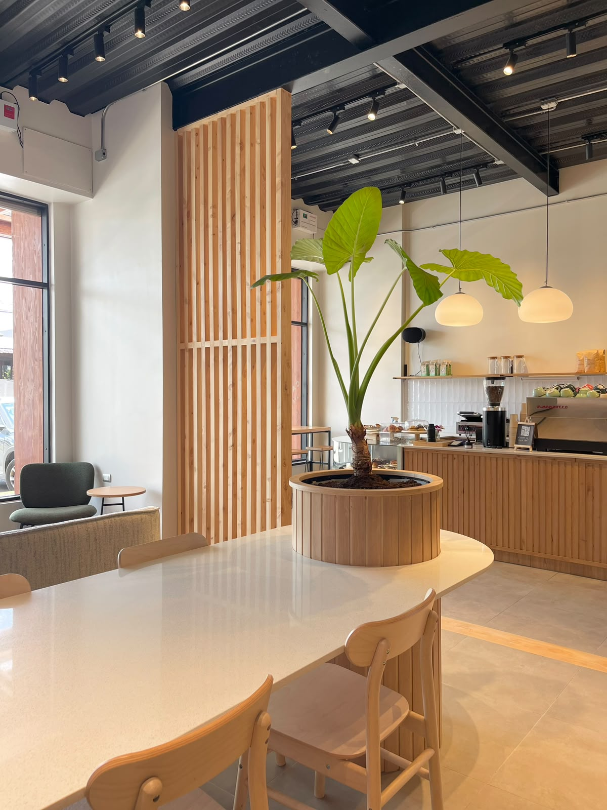
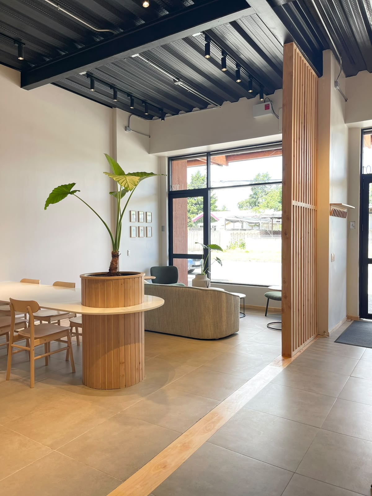
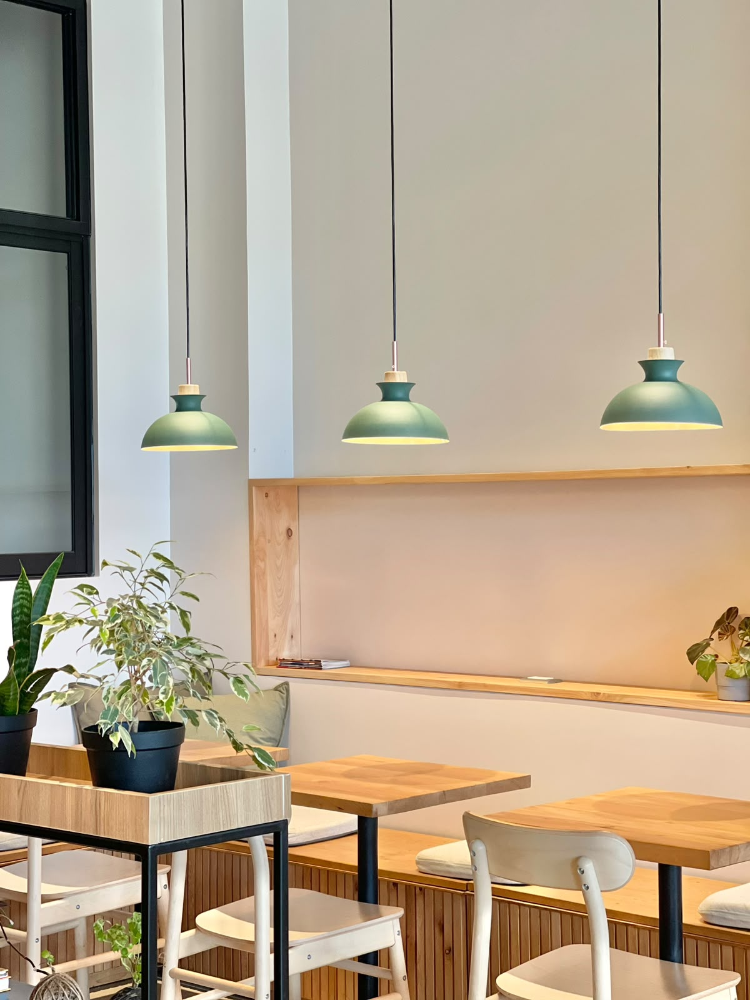
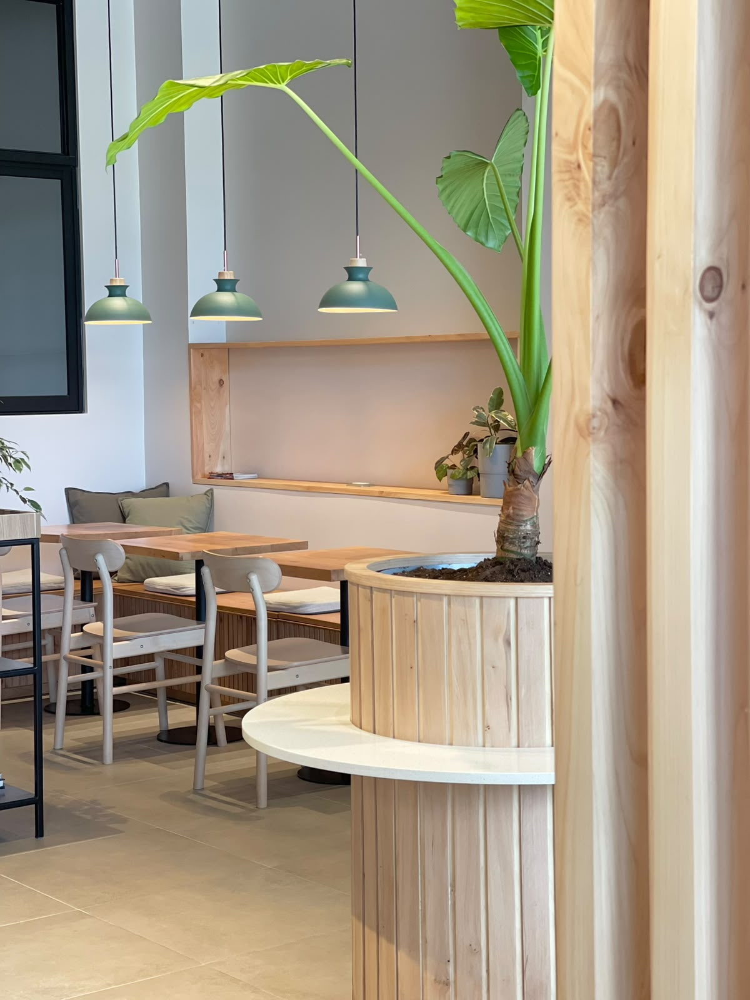
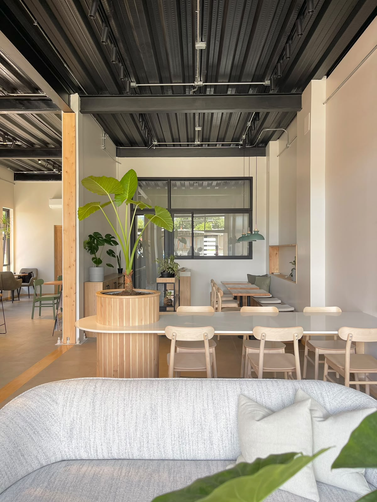
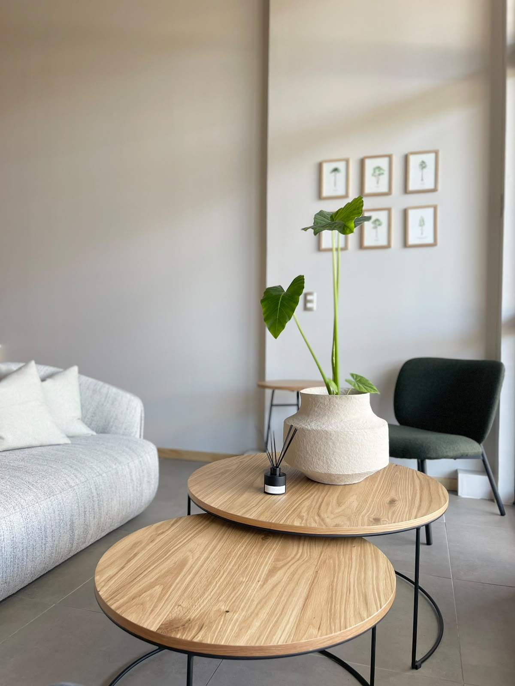
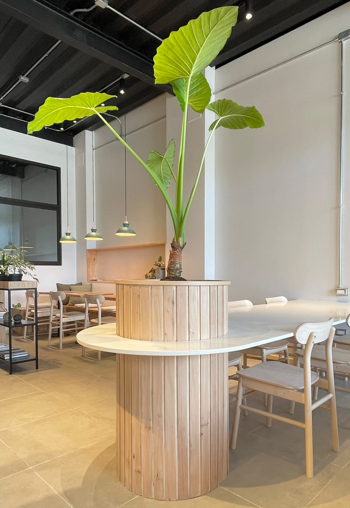
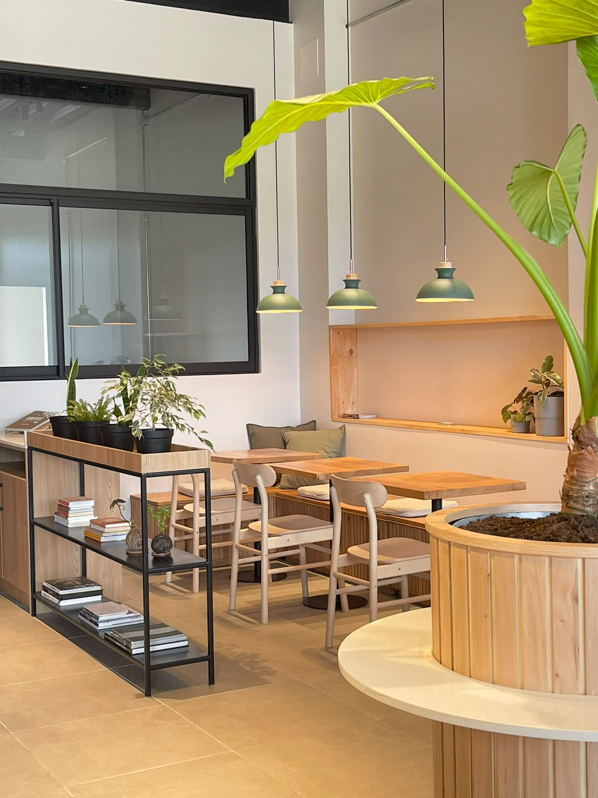

Café Local
Un espacio de encuentro que combina una materialidad cálida, vegetación y estructura expuesta para crear una atmósfera contemporánea y cercana.

El proyecto
Un interior pensado para quedarse.
La propuesta reúne distintas zonas de permanencia dentro de un ambiente luminoso y abierto. La madera, los tonos neutros y la presencia de plantas dan continuidad visual al recorrido y aportan una sensación de calma.
La galería registra el resultado construido. Los datos técnicos y el alcance específico se incorporarán al portafolio una vez confirmados por el estudio.







